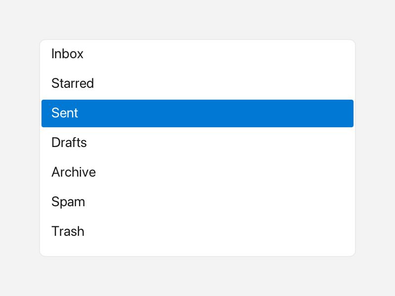

ListView
A ListView is a scrollable vertical list where the user can select one row.
Each row is plain text or rich Inline content with icons and colors.

A scrolling list with the third row selected.
What it's for
Use a ListView when you have a longer set of options or data rows and want the
user to pick one. Unlike a ComboBox, the list stays open on the
screen instead of hiding behind a dropdown, so it suits side panels and pickers
where seeing the choices matters.
Rows have a fixed height and are clipped to the widget's Rect. When the
content overflows, a scrollbar appears and the mouse wheel scrolls the list.
Hovered rows are highlighted, and the selected row is painted with a solid
accent color and white text.
A first example
A window is the operating-system window your app draws into. Window::open
creates it, and if (!win) stops the program if the window could not be opened.
win.add<T>(...) creates a widget inside that window and returns a
reference to it. Rect{x, y, width, height} places the widget. A callback is a
small function you give to a widget so it can call you back when something
happens.
#include <cstdio>
#include <fluffy/fluffy.hpp>
int main() {
fluffy::Window win = fluffy::Window::open("ListView demo", 640, 400);
if (!win) return 1;
auto& lv = win.add<fluffy::ListView>(fluffy::Rect{40, 40, 300, 160});
lv.setItems({"Item 1", "Item 2", "Item 3"});
lv.setSelected(1);
lv.setOnSelect([](int idx, const std::string& v) {
std::printf("selected %d:%s\n", idx, v.c_str());
});
win.run();
}
setItems fills the list, and setSelected chooses the starting row. An index
of -1 means no selection. The onSelect callback receives the row index and
its value.
The snippets below assume win and lv from this example.
Common tasks
Using rich rows
An Inline is rich text made from plain text, an icon from Icons::*, and a
Color. setItemsInline lets each row carry that content. It mirrors items:
setting one form updates the other.
lv.setItemsInline({
fluffy::Inline{} << fluffy::Icons::star << " Star",
fluffy::Inline{} << fluffy::Color{200, 40, 40, 255} << "Warning"
});
Reading the selection
int sel = lv.selected();
std::string v = lv.items()[sel];
fluffy::Inline inl = lv.selectedInline();
const auto& inlItems = lv.itemsInline();
selected returns the row index, or -1 when nothing is selected.
selectedInline returns the rich form of the selected row. Check sel before
indexing items().
Disabling the list
lv.setEnabled(false);
A disabled list is greyed out and ignores clicks and keys.
Loading from YAML
Fluffy can also describe widgets in YAML, a plain text format:
ListView:
items: ["Item 1", "Item 2", "Item 3"]
selected: 0
x: 40
y: 40
width: 300
height: 160
Unlike ComboBox, selected accepts an integer index only; there is no string
form.
Good to know
- Replacing the items with
setItemsorsetItemsInlineresets the selection to-1when it falls out of range and resets the scroll position. - An out-of-range
setSelectedbecomes-1. onSelectfires on a row click, onUp/Down/Home/Endwhen focused, or fromsetSelected()— whenever the index actually changes. Re-selecting the same row or clearing to-1never fires.- The list is focusable and shows a focus halo. There is no
focused()getter; usesetFocused()only.
Quick reference
Properties
| Property | Type | Description |
|---|---|---|
items |
vector<string> |
Plain-text rows. |
itemsInline |
vector<Inline> |
Rich rows (Icons::*, Color). Mirrors items. |
selected |
int |
-1 none, otherwise selected row index (read via selected()). |
focused |
— | Focusable; shows a focus halo (no focused() getter — use setFocused() only). |
Methods
auto& lv = win.add<fluffy::ListView>(fluffy::Rect{40, 40, 300, 160});
lv.setItems({"Item 1", "Item 2", "Item 3"});
lv.setItemsInline({
fluffy::Inline{} << fluffy::Icons::star << " Star",
fluffy::Inline{} << fluffy::Color{200, 40, 40, 255} << "Warning"
});
lv.setSelected(1);
int sel = lv.selected();
std::string v = lv.items()[sel];
fluffy::Inline inl = lv.selectedInline();
const auto& inlItems = lv.itemsInline();
lv.setEnabled(false);
Events
| Event | Signature | When |
|---|---|---|
onSelect |
void(int index, const string& value) |
Click on a row, Up/Down/Home/End when focused, or programmatic setSelected() — whenever the index actually changes. Re-selecting the same row or clearing to -1 never fires. |
lv.setOnSelect([](int idx, const std::string& v) {
std::printf("selected %d:%s\n", idx, v.c_str());
});